People
Scientific Advisory Committee
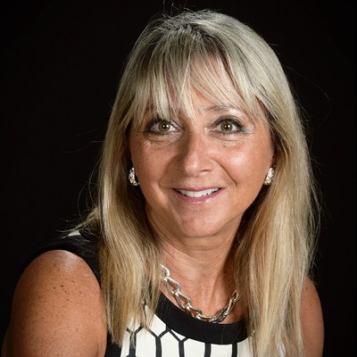
Kavčić-Moura University Professor of Mathematics and director of the Center for Nonlinear Analysis at Carnegie Mellon University. She is the current vice president of the American Mathematical Society and a past president of the Society for Industrial and Applied Mathematics (SIAM).
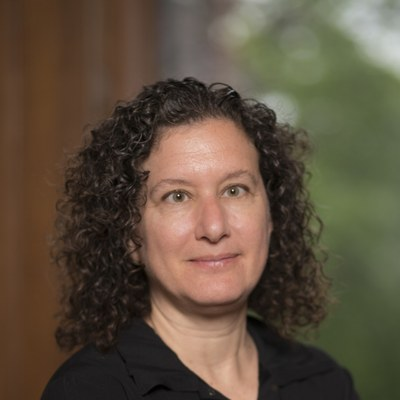
Sarah Rebecca Roland Professor of Mathematics at Northwestern University and a past president of the American Mathematical Society (2023–2025). She is a member of the National Academy of Sciences and a member of the working group that wrote the Leiden Declaration on Artificial Intelligence and Mathematics (June 2026).
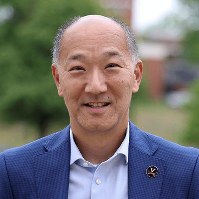
Founding Mathematician at Axiom Math, where he works on applying AI to fundamental mathematics, including Lean-verified proofs. He was previously the Marvin Rosenblum Professor of Mathematics at the University of Virginia and is a past vice president of the American Mathematical Society.
Speakers and panelists
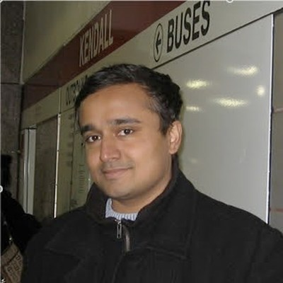
Professor of Computer Science at Georgia Tech, founder and director of the AI4Math Center, and associate director of the IDEaS Institute. He is a co-founder of the Center for Mathematical AI at the Fields Institute.
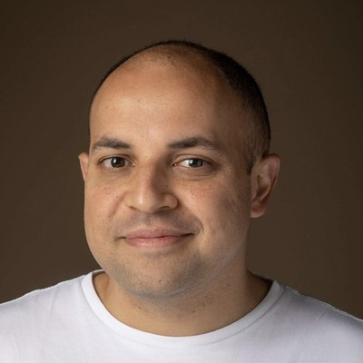
Associate Professor of Mathematics at Texas State University. He is involved in Palomar, a registry of Lean-verified mathematics. He has written on large language models as a cultural and social technology for mathematics, in the essay Happy, those able to know the causes of things (a guest post on Terence Tao's blog, September 2026).
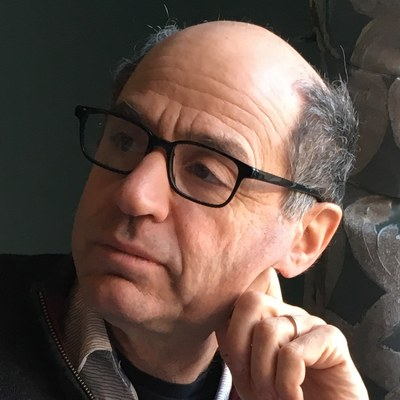
Professor of Mathematics at Columbia University and professor emeritus at Université Paris Cité. He is a member of the National Academy of Sciences and a member of the working group that wrote the Leiden Declaration on Artificial Intelligence and Mathematics (June 2026). He writes the newsletter Silicon Reckoner on mathematics and AI and has spoken on the mechanization of mathematics.
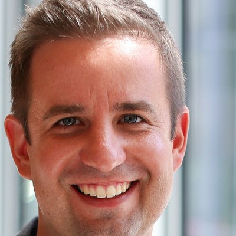
Associate Professor of Mathematics at Ohio State University and Managing Director of the Erdős Institute, a multi-university program that helps graduate students and postdocs find careers in industry.
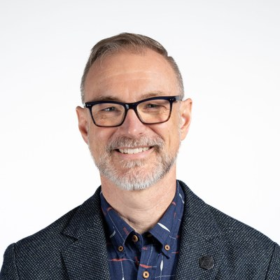
Professor of Mathematics at the University of Florida and Interim Associate Dean in the College of Liberal Arts and Sciences. He chaired the Department of Mathematics from 2018 to 2024. He co-hosts the podcast My Favorite Theorem.
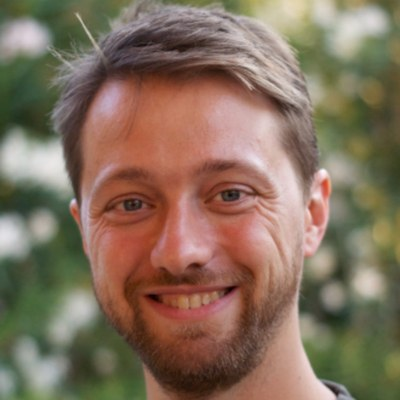
Professor of Mathematics and Chair of the Department of Mathematics at the University of Texas at Austin. He has written on the integration of large language models into mathematics and science, in the essay Will it be a golden age or a dark age for mathematics (and science)? (a guest post on Terence Tao's blog, October 2026).
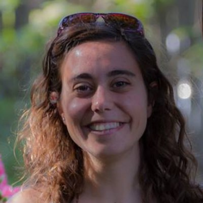
Associate Professor of Mathematics at the University of Virginia and Chair of the AMS Committee on Education. She took part in the 2026 AMS Committee on Education workshop on graduate education, whose report, A paradigm shift in doctoral education in mathematics, addresses how AI changes the purpose, training, and assessment of the mathematics PhD.
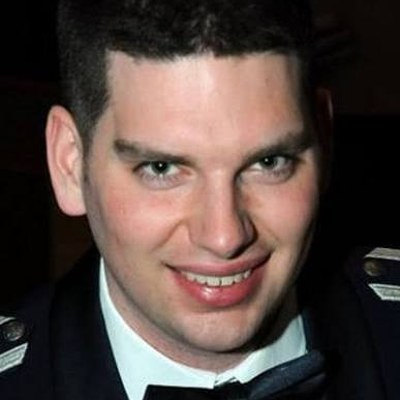
Associate Professor of Mathematics at Ohio State University. With Boris Alexeev he resolved a $1000 Erdős prize problem, showing that not every finite Sidon set extends to a finite perfect difference set, and used ChatGPT to produce a Lean verification of the counterexamples (arXiv:2510.19804).
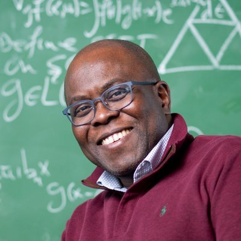
Robinson Professor of Mathematics and Chair of the Department of Mathematics at Tufts University. He is a Fellow of the American Mathematical Society (class of 2024) and previously served as a Professor of Mathematics at the University of Maryland and as a Martin Luther King Jr. Visiting Professor at MIT.
Founding Mathematician at Axiom Math, where he works on applying AI to fundamental mathematics, including Lean-verified proofs. He was previously the Marvin Rosenblum Professor of Mathematics at the University of Virginia and is a past vice president of the American Mathematical Society.
Additional speakers and panelists will be listed here once they have confirmed.